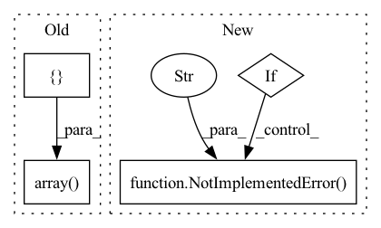

Pattern ID :21354

Before Change
if np.any(positions[i, :2] < 0) or np.any(positions[i, :2] > img_size[0]):
cont.append(Emitter(positions[i, :], np.array([photon_count[i]]), np.array([start_frame[i]]), True))
else:
emit.append(Emitter(positions[i, :], np.array([photon_count[i]]), np.array([start_frame[i]])))
return emit, cont
After Change
is_emit = np.multiply(np.all(emit_all[:, :2] >= 0, 1), np.all(emit_all[:, :2] <= img_size[0], 1))
is_cont = ~is_emit
if img_size[0] != img_size[1]:
raise NotImplementedError("Image must be square at the moment because otherwise the following doesn"t work.")
emit_mat, cont_mat = emit_all[is_emit, :], emit_all[is_cont, :]
return emit_mat, cont_mat
In pattern: SUPERPATTERN
Frequency: 3
Non-data size: 4
Instances
Fragment ID: 68178564
Project Name: turagalab/decode
Commit Name: d44a397fde84e5b61edf94a145c72930f30171fa
Time: 2018-12-20
Author: gitdev@LRM.photo
File Name: simulator.py
M Class Name: AnonimousClass
N Class Name: AnonimousClass
M Method Name: random_emitters(5)
N Method Name: random_emitters(5)
M Parent Class:
N Parent Class:
M File Name: simulator.py
N File Name: simulator.py
M Start Line: 192
M End Line: 215
N Start Line: 186
N End Line: 210
'>
Before Change
objPts_w = np.array(self.objPts).transpose()[0]
mat_objPts_w = np.concatenate((objPts_w, np.array([np.ones((self.n))])), axis=0)
contPts_w = self.contPts_w.transpose()
mat_contPts_w = np.concatenate((contPts_w, np.array([np.ones((4))])), axis=0)
// Calculate Alpha
Alpha = np.matmul(np.linalg.inv(mat_contPts_w), mat_objPts_w) // simple method
After Change
batched_ones = torch.ones((batch_size, 4, 1), dtype=contPts_w.dtype, device=contPts_w.device)
contPts_w = torch.cat((contPts_w, batched_ones), dim=-1)
if linear_least_square:
NotImplementedError("Linear least square method is not implemented yet.")
// Calculate Alpha TODO: CHECK if logic is correct, or change to general method
alpha = torch.bmm(torch.linalg.inv(contPts_w), objPts) // simple method
alpha = alpha.transpose()
else:
'>
Fragment ID: 68178567
Project Name: pypose/pypose
Commit Name: f6e65aa4066f56f1715c9ddfd89f5307c1ebe043
Time: 2023-02-24
Author: ztzhan1108@gmail.com
File Name: pypose/module/pnp.py
M Class Name: EPnP
N Class Name: EPnP
M Method Name: compute_alphas(4)
N Method Name: compute_alphas(1)
M Parent Class:
N Parent Class:
M File Name: pypose/module/pnp.py
N File Name: pypose/module/pnp.py
M Start Line: 127
M End Line: 140
N Start Line: 131
N End Line: 158
'>
Before Change
"""
if type == "kpt68":
old_size = (right - left + bottom - top) / 2 * 1.1
center = np.array([right - (right - left) / 2.0, bottom - (bottom - top) / 2.0])
elif type == "bbox":
old_size = (right - left + bottom - top) / 2
center = np.array([right - (right - left) / 2.0, bottom - (bottom - top) / 2.0 + old_size * 0.12])
else:
After Change
center_x = right - (right - left) / 2.0
center_y = bottom - (bottom - top) / 2.0 + old_size * 0.12
// center = np.array([right - (right - left) / 2.0, bottom - (bottom - top) / 2.0 + old_size * 0.12])
elif type == "mediapipe":
old_size = (right - left + bottom - top) / 2 * 1.1
center_x = right - (right - left) / 2.0
center_y = bottom - (bottom - top) / 2.0
// center = np.array([right - (right - left) / 2.0, bottom - (bottom - top) / 2.0])
else:
raise NotImplementedError(f" bbox2point not implemented for {type} ")
if isinstance(center_x, np.ndarray):
center = np.stack([center_x, center_y], axis=1)
else:
center = np.array([center_x, center_y])
'>
Fragment ID: 68178569
Project Name: radekd91/emoca
Commit Name: 6b1c214e8dffa4c597f3ab915f7cfddb6d7abf2b
Time: 2023-02-13
Author: danekradek@gmail.com
File Name: gdl/datasets/ImageDatasetHelpers.py
M Class Name: AnonimousClass
N Class Name: AnonimousClass
M Method Name: bbox2point(5)
N Method Name: bbox2point(5)
M Parent Class:
N Parent Class:
M File Name: gdl/datasets/ImageDatasetHelpers.py
N File Name: gdl/datasets/ImageDatasetHelpers.py
M Start Line: 30
M End Line: 35
N Start Line: 30
N End Line: 49